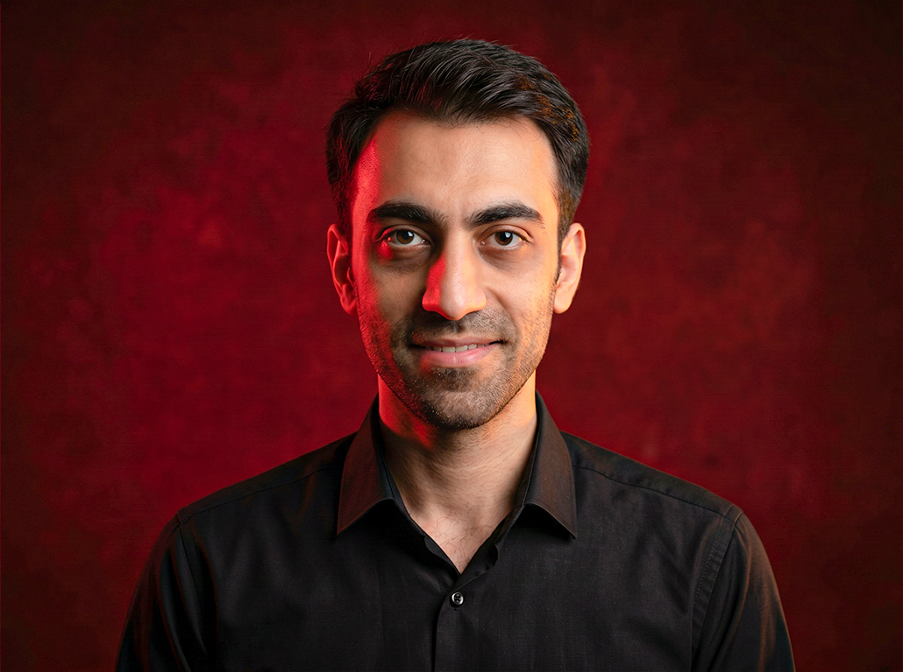

AI & Robotics Researcher · Tehran
Hamed Hosseini
PhD in AI & Robotics, University of Tehran. Postdoc at TAARLab — the Human–Robot Interaction Lab — working on robotic grasp detection and scene understanding; I also lead applied AI teams in finance.

About
I do research at the point where vision meets manipulation: teaching robots to understand objects as geometric primitives and infer stable grasp poses from RGB-D data. My doctoral work — primitive-shape scene abstraction for grasp detection — was implemented in simulation and validated on a real parallel delta robot with a custom gripper. I now continue this work as a postdoctoral researcher at TAARLab, the Human–Robot Interaction Laboratory at the University of Tehran.
Parallel to research, since 2018 I have led a data science team in banking: fraud detection, credit evaluation, and LLM-based customer systems, built on Spark and Kafka pipelines.
- PhD
- Artificial Intelligence & Robotics, University of Tehran · 2017–2025
- MSc
- Electrical Engineering, Control · Amirkabir University of Technology · 2017
- BSc
- Electrical Engineering · Amirkabir University of Technology · 2015
- Now
- Postdoc · TAARLab — Lecturer (AI in Robotics) · Data Science Team Lead
Research
Robotic grasping
Geometry-aware grasp pose inference for finger grippers, from RGB-D observation to robot action.
Scene abstraction
Decomposing objects and scenes into 3D primitives — the representation behind my grasp-detection work.
Embodied AI
Rearrangement and relocation tracking in simulated kitchen environments (AI2-THOR).
Computer vision
Detection, segmentation, RGB-D perception, and robust multimodal models.
Applied AI
LLM systems, RAG, fraud analytics, and financial machine learning in production.
Publications
Full list on Scholar ↗Journal
Dynamic Buffers: Cost-Efficient Planning for Tabletop Rearrangement with Stacking
Barghi, Hosseini, Ghasemi, Masouleh, Kalhor — IEEE Trans. Automation Science and Engineering
Embodied AI for Kitchen Scene Rearrangement: A Deep Spatio-Temporal Approach
Nasr Esfahani, Hosseini, Masouleh, Kalhor — Intelligent Service Robotics
Architecture Design and Branching Strategies for Sound Event Detection Using Cross Separation Index
Vaghef Davari, Hosseini, Beigy, Masouleh, Kalhor — 34th ICEE
Conference
Learning Post-approach Robotic Grasping using Convolutional Neural Networks
Koosheshi, Hosseini, Masouleh, Haeri Yazdi, Kalhor — 13th RSI ICRoM · oral
Multi-Modal Robust Geometry Primitive Shape Scene Abstraction for Grasp Detection
Hosseini, Koosheshi, Masouleh, Kalhor — IEEE Access · DOI · video
Scene Understanding in Pick-and-Place Tasks: Analyzing Transformations Between Initial and Final Scenes
Ghasemi, Hosseini, Koosheshi, Masouleh, Kalhor — 32nd ICEE
AI-Driven Relocation Tracking in Dynamic Kitchen Environments
Nasr Esfahani, Hosseini, Masouleh, Kalhor, Sajedi — 14th ICCKE
AGILE: Approach-Based Grasp Inference Learned from Element Decomposition
Koosheshi, Hosseini, Masouleh, Haeri Yazdi, Kalhor — 11th RSI ICRoM
Improving the Successful Robotic Grasp Detection Using Convolutional Neural Networks
Hosseini, Masouleh, Kalhor — ICSPIS
Experience
Postdoctoral Researcher · TAARLab
Human–Robot Interaction Laboratory, University of Tehran — robotic grasping, scene abstraction, and embodied AI.
Data Science Team Lead
Pouya Co. · Banking solutions — fraud detection, credit evaluation, LLM support systems, Spark/Kafka pipelines.
Lecturer · AI in Robotics and Mechatronics
University of Tehran. Course materials ↗
Research Assistant · TAARLab
Human–Robot Interaction Laboratory, University of Tehran — grasping, scene understanding, deep learning.
Research Assistant · Robotics & Signal Labs
Amirkabir University of Technology — small-size robot soccer (RoboCup 4th place 2017), control, biosignal ML.
Invited workshops: Elecomp 2025 · AIoT 2025 · IranOpen 2025 · ICCKE 2024 · AISP 2024 · ICRoM 2023 — robotic grasping & manipulation.
Talks & media: TEDx talk · 2024 — paper videos and workshop highlights on LinkedIn ↗